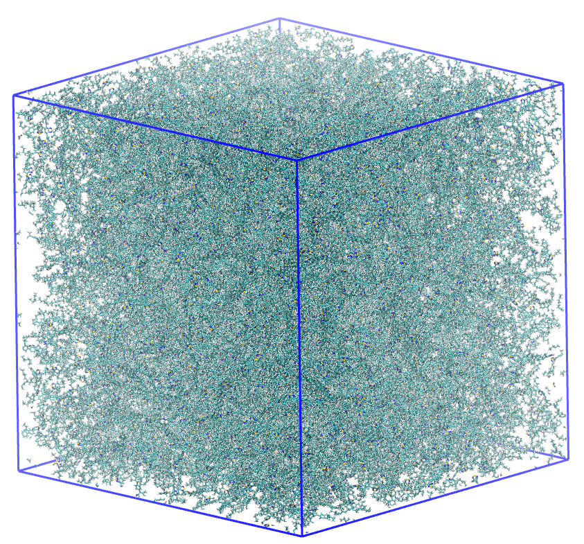
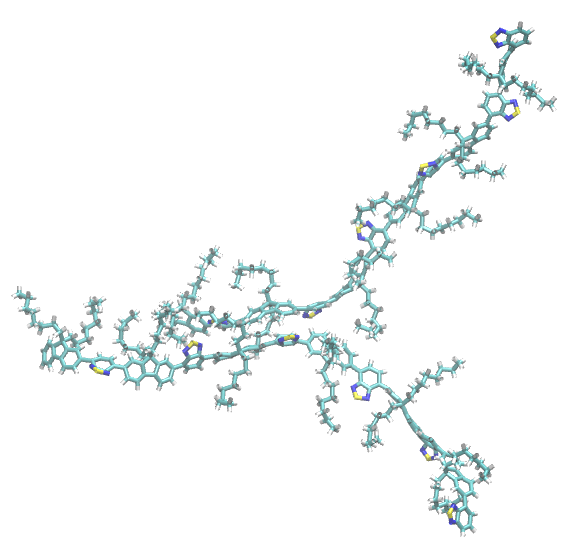
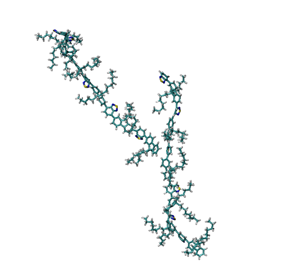
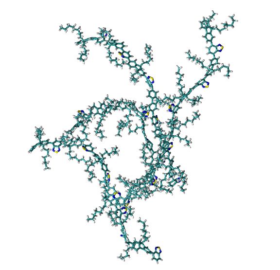

Tutorial on the Usage of the RSA Tool
This tutorial illustrates how to use the Ring Stacking Analysis (RSA) tool within the pysoftk library to identify and analyze $pi$-$pi$ stacking interactions in large polymer systems.
Theoretical Background
$pi$-$pi$ stacking is a non-covalent attractive force between aromatic rings. In polymer science, particularly for organic electronics, these interactions are crucial for charge transport and morphological stability. The RSA tool identifies these events based on two geometric criteria:
Distance Cutoff ($d$): The minimum distance between the centers of mass of any two rings.
Angle Cutoff ($theta$): The angle between the normal vectors of the two ring planes.
Preparation
Before starting any analysis, load the necessary modules and define your file paths and parameters.
import os
import pandas as pd
import MDAnalysis as mda
from pysoftk.pol_analysis.ring_ring import RSA
# 1. SETUP AND PATHS
topology = 'data/f8bt_slab_quench.tpr'
trajectory = 'data/1_frame_traj.xtc'
results_file = 'data/rsa.parquet'
os.makedirs('data', exist_ok=True)
snapshot_dir = 'snapshots'
os.makedirs(snapshot_dir, exist_ok=True)
# 2. CALCULATION PARAMETERS
ang_c = 25
dist_c = 4.5
start, stop, step = 0, 1, 1
The simulation utilized in this tutorial is a large polymer slab. Due to the high atom count, we will demonstrate the analysis on a single frame.

A simulation box containing 776 F8BT polymer chains.
Running the Stacking Analysis
The RSA class requires minimal user input to run. Select your trajectory files (it is recommended to use a .tpr file for the topology and an .xtc file for the trajectory, though any MDAnalysis-supported file can be used).
The stacking_analysis function is highly optimized. It uses Fragment Templating to identify rings via RDKit only once per species, cKDTree for rapid neighbor searching, and Numba-accelerated SVD to calculate plane normals at near-C speeds.
Note
This version is optimized for polymer connectivity. To handle large systems (e.g., 100k+ atoms), it focuses on Polymer Residue IDs (pol_resid) rather than individual atom indices, significantly reducing memory overhead and calculation time.
# 3. RUNNING THE ANALYSIS
print(f"Loading topology: {topology}")
print(f"Loading trajectory: {trajectory}")
rsa_calc = RSA(topology, trajectory)
print("\n--- Running Stacking Analysis ---")
# write_pdb=False is used because we will generate snapshots selectively below
rsa_calc.stacking_analysis(dist_c, ang_c, start, stop, step, results_file, write_pdb=False)
Loading topology: data/f8bt_slab_quench.tpr
Loading trajectory: data/1_frame_traj.xtc
--- Running Stacking Analysis ---
Ring Stacking analysis has started...
Trajectory Progress: 100%|██████████| 1/1 [01:26<00:00, 86.51s/it]
Function stacking_analysis Took 98.4840 seconds
Exploring the Results
The output is stored in a Pandas DataFrame and saved as a Parquet file. The pol_resid column contains pairs of polymer Residue IDs that are participating in at least one stacking interaction.
print("\n--- Exploring Results ---")
df = pd.read_parquet(results_file)
print(df.head())
Selective PDB Generation
Instead of generating PDB files for every single stacked pair, you can parse the results to extract specific geometries. The following code demonstrates how to automatically extract two completely independent dimers for visual inspection.
print("\n--- Selective PDB Generation ---")
u = rsa_calc.get_mda_universe()
u.trajectory[0] # Ensure we are on the correct frame
# Extract all interacting pairs for the first frame
interactions = df['pol_resid'].iloc[0]
saved_polymers = set() # Track polymers to ensure distinct pairs
dimers_found = 0
required_dimers = 2
for pair in interactions:
resA, resB = pair
# Check if either polymer is already part of a saved dimer
if resA not in saved_polymers and resB not in saved_polymers:
selection = u.select_atoms(f'resid {resA} {resB}')
pdb_name = os.path.join(snapshot_dir, f"dimer_{resA}_{resB}.pdb")
with mda.Writer(pdb_name, selection.n_atoms) as W:
W.write(selection)
print(f"Generated independent dimer snapshot: {pdb_name}")
# Mark these polymers as "used" and increment count
saved_polymers.update([resA, resB])
dimers_found += 1
# Stop once we have our required number of unique dimers
if dimers_found == required_dimers:
break
print(f"Finished extracting {dimers_found} distinct dimers.")
Visual Inspection
You can open the generated PDB snapshots in your preferred molecular visualization software to verify the stacking geometry.


Network Analysis
One of the most powerful features of the RSA tool is the ability to extract the Connected Network. This identifies clusters of polymers that are all interconnected through continuous stacking interactions. By analyzing these networks, you can determine if your system has reached percolation or remains as isolated aggregates.
# 5. NETWORK ANALYSIS
print("\n--- Extracting Connected Networks ---")
# Returns a list of sets containing the clustered network IDs
sev_ring = rsa_calc.find_several_rings_stacked(results_file)
if sev_ring and len(sev_ring[0]) > 0:
clusters = sev_ring[0]
print(f"Total isolated pi-stacked clusters found: {len(clusters)}")
# Sort clusters by size to easily find the largest
clusters_sorted = sorted(clusters, key=len, reverse=True)
largest_cluster = clusters_sorted[0]
print(f"Largest connected network contains {len(largest_cluster)} polymers.")
# Convert the set to a sorted list so we can slice it safely
sorted_members = sorted(list(largest_cluster))
print(f"First 20 members of largest cluster: {sorted_members[:20]}")
# Optional: Show the second largest for context
if len(clusters_sorted) > 1:
second_largest = clusters_sorted[1]
print(f"Second largest network contains {len(second_largest)} polymers.")
else:
print("No stacked networks found with these parameters.")
--- Extracting Connected Networks ---
Total isolated pi-stacked clusters found: 51
Largest connected network contains 418 polymers.
First 20 members of largest cluster: [1, 2, 3, 4, 5, 7, 8, 9, 10, 12, 14, 16, 19, 20, 22, 25, 26, 28, 29, 33]
Second largest network contains 20 polymers.
Connectivity Visualization

A representation of polymers connected by their stacked rings.